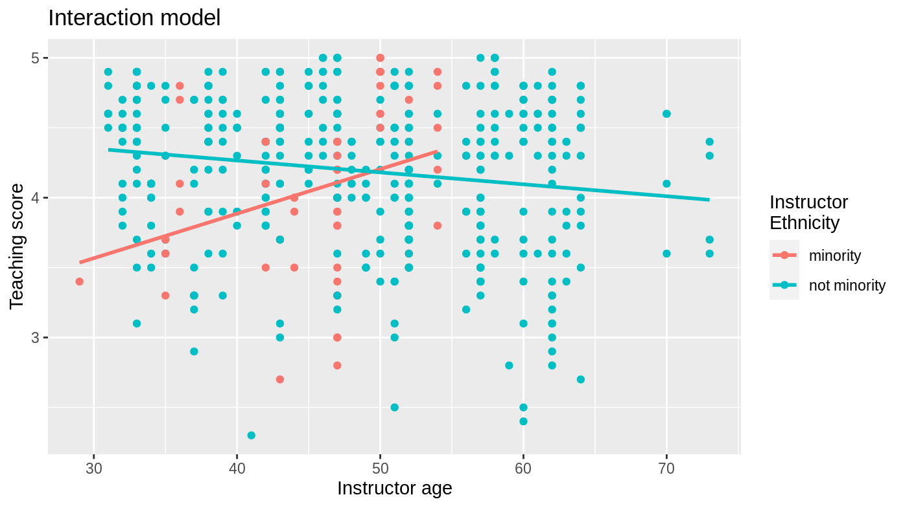
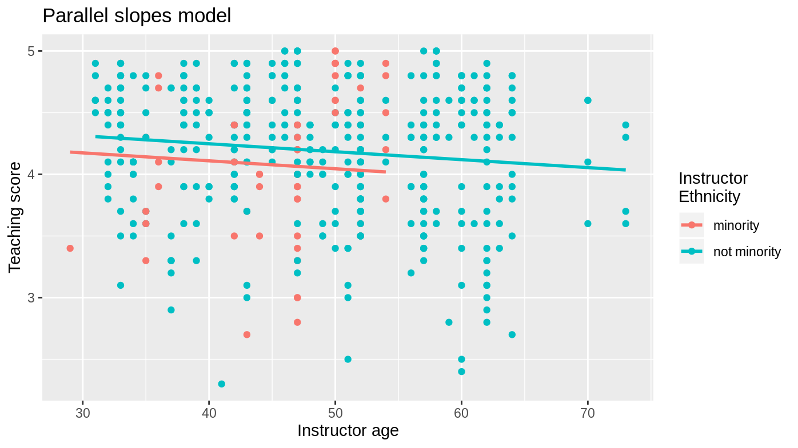
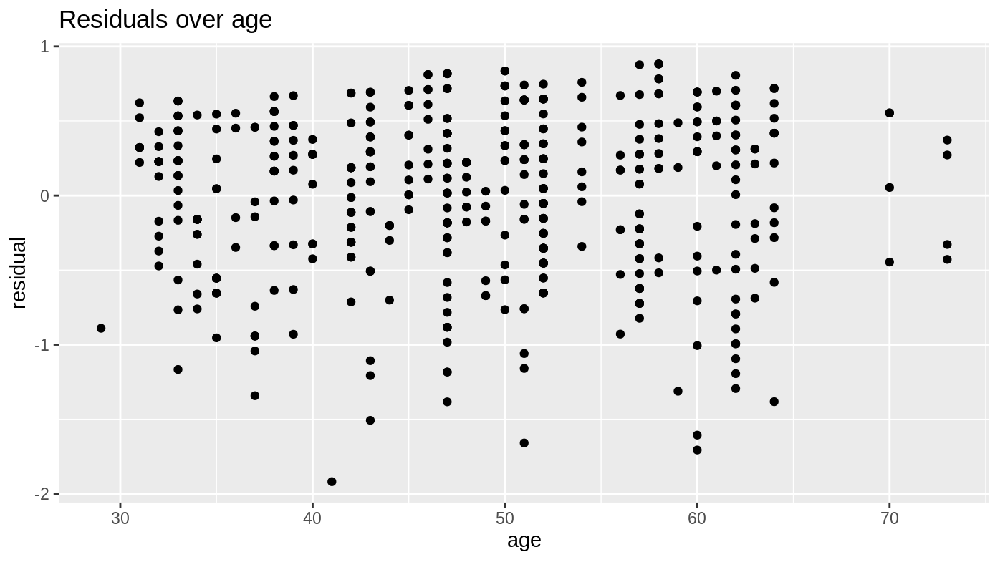
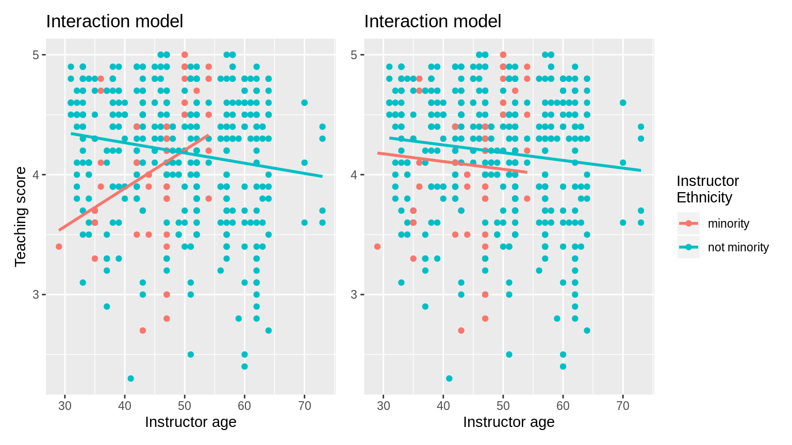
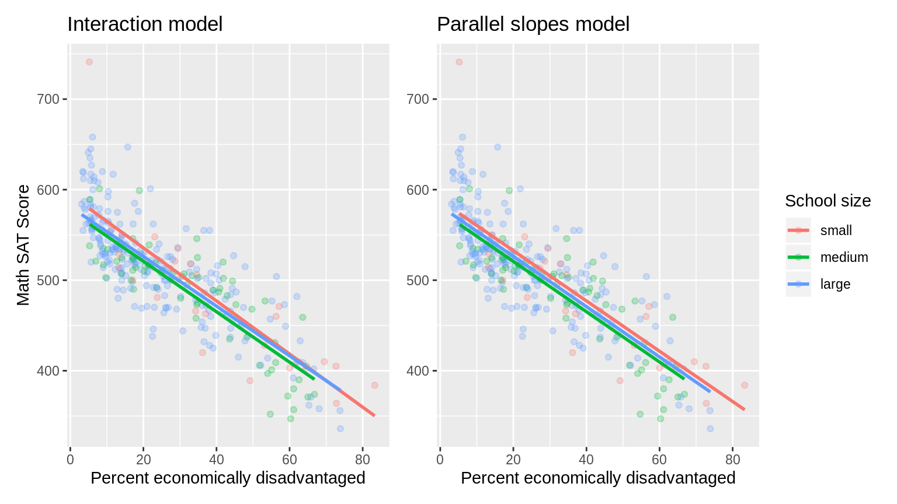

Why should you use the moderndive package for intro linear regression?
Albert Y. Kim & Chester Ismay
2020-02-17
Source:vignettes/why-moderndive.Rmd
why-moderndive.RmdIntro
Linear regression has long been a staple of introductory statistics courses. While the timing of when to introduce it may have changed (many argue that descriptive regression should be done ASAP and then revisited later after statistical inference has been covered), it’s overall importance in the intro stats curriculum remains the same.
Let’s consider data gathered from end of semester student evaluations for 463 courses (taught by 94 unique professors) from the University of Texas at Austin (see openintro.org for more details). Here is a random sample of 5 courses and a subset of 8 of the 13 variables included, where the outcome variable of interest is the teaching evaluation score out of 5 as given by students:
| ID | score | age | bty_avg | gender | ethnicity | language | rank |
|---|---|---|---|---|---|---|---|
| 290 | 3.6 | 34 | 6.667 | male | not minority | english | tenure track |
| 341 | 4.9 | 43 | 3.500 | male | not minority | english | tenure track |
| 199 | 3.3 | 47 | 2.333 | male | minority | english | tenured |
| 47 | 4.4 | 33 | 4.667 | female | not minority | english | tenure track |
| 215 | 4.7 | 60 | 3.667 | male | not minority | english | tenured |
The data is included in evals dataset in the moderndive R package for tidyverse-friendly introductory linear regression. Let’s fit a regression model of teaching score as a function of instructor age:
Regression analysis the “good old-fashioned” way
Let’s analyze the output of the fitted model score_model “the good old fashioned way”: using summary.lm().
summary(score_model)
#>
#> Call:
#> lm(formula = score ~ age, data = evals)
#>
#> Residuals:
#> Min 1Q Median 3Q Max
#> -1.9185 -0.3531 0.1172 0.4172 0.8825
#>
#> Coefficients:
#> Estimate Std. Error t value Pr(>|t|)
#> (Intercept) 4.461932 0.126778 35.195 <2e-16 ***
#> age -0.005938 0.002569 -2.311 0.0213 *
#> ---
#> Signif. codes: 0 '***' 0.001 '**' 0.01 '*' 0.05 '.' 0.1 ' ' 1
#>
#> Residual standard error: 0.5413 on 461 degrees of freedom
#> Multiple R-squared: 0.01146, Adjusted R-squared: 0.009311
#> F-statistic: 5.342 on 1 and 461 DF, p-value: 0.02125Here are five common student comments/questions we’ve heard over the years in our intro stats courses based on this output:
- “Wow! Look at those p-value stars! Stars are good, so I must get more stars somehow.”
- “How do extract the values in the regression table?”
- “Where are the fitted/predicted values and residuals?”
- “How do I apply this model to a new set of data to make predictions?”
- “What is all this other stuff at the bottom?”
Regression analysis the tidyverse-friendly way
To address these comments/questions, we’ve included three functions in the moderndive package that takes as a fitted model as input (in this case score_model) and returns the same information as summary(score_model) but in a tidyverse-friendly way:
-
Get a tidy regression table with confidence intervals:
-
Get information on each point/observation in your regression, including fitted/predicted values & residuals, in a single data frame:
get_regression_points(score_model) #> # A tibble: 463 x 5 #> ID score age score_hat residual #> <int> <dbl> <int> <dbl> <dbl> #> 1 1 4.7 36 4.25 0.452 #> 2 2 4.1 36 4.25 -0.148 #> 3 3 3.9 36 4.25 -0.348 #> 4 4 4.8 36 4.25 0.552 #> 5 5 4.6 59 4.11 0.488 #> 6 6 4.3 59 4.11 0.188 #> 7 7 2.8 59 4.11 -1.31 #> 8 8 4.1 51 4.16 -0.059 #> 9 9 3.4 51 4.16 -0.759 #> 10 10 4.5 40 4.22 0.276 #> # … with 453 more rows -
Get scalar summaries of a regression fit including \(R^2\) and \(R^2_{adj}\) but also the (root) mean-squared error:
Visualizing parallel slopes models
Say you are plotting a scatterplot with a categorical variable mapped to the color aesthetic. Using geom_smooth(method = "lm", se = FALSE) from the ggplot2 package yields a visualization of an interaction model (different intercepts and different slopes):
library(ggplot2)
ggplot(evals, aes(x = age, y = score, color = ethnicity)) +
geom_point() +
labs(x = "Instructor age", y = "Teaching score", color = "Instructor\nEthnicity",
title = "Interaction model") +
geom_smooth(method = "lm", se = FALSE)
However, say you want to plot a parallel slopes model. For example, many introductory statistics textbooks start with the simpler-to-teach “common slope, different intercepts” regression model. Alas however, you can’t visualize such models using geom_smooth().
Evgeni Chasnovski thus wrote a custom geom_ extension to ggplot2 called geom_parallel_slopes(). You use it just as you would any geom_etric object in ggplot2, but you need to have the moderndive package loaded as well:
library(ggplot2)
library(moderndive)
ggplot(evals, aes(x = age, y = score, color = ethnicity)) +
geom_point() +
labs(x = "Instructor age", y = "Teaching score", color = "Instructor\nEthnicity",
title = "Parallel slopes model") +
geom_parallel_slopes(se = FALSE)
At this point however, students will inevitably ask a sixth question: “When would you ever use a parallel slopes model?”
1. Less p-value stars, more confidence intervals
The first common student comment/question:
“Wow! Look at those p-value stars! Stars are good, so I must get more stars somehow.”
We argue that the summary() output is deficient in an intro stats setting because:
- The
Signif. codes: 0 '***' 0.001 '**' 0.01 '*' 0.05 '.' 0.1 ' ' 1only encourage p-hacking. In case you have not yet been convinced of the perniciousness of p-hacking, perhaps comedian John Oliver can convince you.
- While not a silver bullet for eliminating misinterpretations of statistical inference results, confidence intervals at least give students a sense of the practical significance and not just the statistical significance of the results. These should be included in the regression table output.
Instead of summary(), let’s use the get_regression_table() function in the moderndive package:
get_regression_table(score_model)
#> # A tibble: 2 x 7
#> term estimate std_error statistic p_value lower_ci upper_ci
#> <chr> <dbl> <dbl> <dbl> <dbl> <dbl> <dbl>
#> 1 intercept 4.46 0.127 35.2 0 4.21 4.71
#> 2 age -0.006 0.003 -2.31 0.021 -0.011 -0.001Confidence intervals! By including them in the output, we can easily emphasize to students that they “surround” the point estimates in the estimate column. Note the confidence level is defaulted to 95%.
2. Outputs as tidy tibbles!
All the functions in the moderndive package return tidy tibbles! So for example, by piping the above get_regression_table(score_model) output into the kable() function from the knitr package, you can have aesthetically pleasing regression tables in R Markdown documents, instead of jarring computer output font:
| term | estimate | std_error | statistic | p_value | lower_ci | upper_ci |
|---|---|---|---|---|---|---|
| intercept | 4.462 | 0.127 | 35.195 | 0.000 | 4.213 | 4.711 |
| age | -0.006 | 0.003 | -2.311 | 0.021 | -0.011 | -0.001 |
Now let’s address the second common student comment/question:
“How do extract the values in the regression table?”
While one might argue that extracting the intercept and slope coefficients can be simply done using coefficients(score_model), what about the standard errors? A Google query of “how do I extract standard errors from lm in r” yields results from the R mailing list and from crossvalidated suggesting we run:
Say what?!? It shouldn’t be this hard! However since get_regression_table() returns a data frame/tidy tibble, you can easily extract columns using dplyr::pull():
or equivalently you can use the $ sign operator from base R:
3. Birds of a feather should flock together: Fitted values & residuals
The third common student comment/question:
“Where are the fitted/predicted values and residuals?”
How can we extract point-by-point information from a regression model, such as the fitted/predicted values and the residuals? (Note we’ll only display the first 10 of such values, and not all n = 463, for brevity’s sake)
#> 1 2 3 4 5 6 7 8
#> 4.248156 4.248156 4.248156 4.248156 4.111577 4.111577 4.111577 4.159083
#> 9 10
#> 4.159083 4.224403#> 1 2 3 4 5 6
#> 0.45184376 -0.14815624 -0.34815624 0.55184376 0.48842294 0.18842294
#> 7 8 9 10
#> -1.31157706 -0.05908286 -0.75908286 0.27559666But why have the original explanatory/predictor age and outcome variable score in evals, the fitted/predicted values score_hat, and residual floating around in separate pieces? Since each observation relates to the same instructor, wouldn’t it make sense to organize them together? This is where get_regression_points() shines!
#> # A tibble: 10 x 5
#> ID score age score_hat residual
#> <int> <dbl> <int> <dbl> <dbl>
#> 1 1 4.7 36 4.25 0.452
#> 2 2 4.1 36 4.25 -0.148
#> 3 3 3.9 36 4.25 -0.348
#> 4 4 4.8 36 4.25 0.552
#> 5 5 4.6 59 4.11 0.488
#> 6 6 4.3 59 4.11 0.188
#> 7 7 2.8 59 4.11 -1.31
#> 8 8 4.1 51 4.16 -0.059
#> 9 9 3.4 51 4.16 -0.759
#> 10 10 4.5 40 4.22 0.276Observe that the original outcome variable score and explanatory/predictor variable age are now supplemented with the fitted/predicted value score_hat and residual columns. By putting the fitted/predicted values and the residuals next to the original data, we argue that the computation of these values is less opaque. For example in class, instructors can write out by hand how all the values in the first row, corresponding to the first instructor, are computed.
Furthermore, recall that all outputs in the moderndive package are data frames/tidy tibbles, thus you can easily create custom residual analysis plots, instead of the default ones yielded by plot(score_model). For example, we create:
- A histogram of all residuals to investigate normality.
- A partial residual plot of the relationship of the residuals vs all explanatory/predictor variables to investigate the presence of heteroskedasticity; in this case a scatterplot of the residuals over
age.
score_model_points <- get_regression_points(score_model)
# Histogram of residuals:
ggplot(score_model_points, aes(x = residual)) +
geom_histogram(bins = 20) +
labs(title = "Histogram of residuals")
# Investigating patterns:
ggplot(score_model_points, aes(x = age, y = residual)) +
geom_point() +
labs(title = "Residuals over age")
4. Baby’s first Kaggle predictive modeling competition submission!
The fourth common student comment/question:
“How do I apply this model to a new set of data to make predictions?”
With the fields of machine learning and artificial intelligence gaining prominence, the importance of predictive modeling cannot be understated. Therefore, we’ve designed the get_regression_points() function to allow for a newdata argument to quickly apply a previously fitted model to “new” observations.
Let’s create an artificial “new” dataset which is a subset of the original evals data with the outcome variable score removed and use it as the newdata argument:
new_evals <- evals %>%
sample_n(4) %>%
select(-score)
new_evals
#> # A tibble: 4 x 13
#> ID prof_ID age bty_avg gender ethnicity language rank pic_outfit
#> <int> <int> <int> <dbl> <fct> <fct> <fct> <fct> <fct>
#> 1 354 71 50 3.33 male minority english teac… not formal
#> 2 140 25 34 7.83 female not mino… english tenu… not formal
#> 3 334 67 50 7.17 male not mino… english tenu… not formal
#> 4 148 27 52 4.83 male minority non-eng… tenu… formal
#> # … with 4 more variables: pic_color <fct>, cls_did_eval <int>,
#> # cls_students <int>, cls_level <fct>
get_regression_points(score_model, newdata = new_evals)
#> # A tibble: 4 x 3
#> ID age score_hat
#> <int> <int> <dbl>
#> 1 1 50 4.16
#> 2 2 34 4.26
#> 3 3 50 4.16
#> 4 4 52 4.15score_hat are the predicted values! Let’s do another example, this time using the Kaggle House Prices: Advanced Regression Techniques practice competition.

This Kaggle competition requires you to fit/train a model to the provided train.csv training set to make predictions of house prices in the provided test.csv test set. Here is code for a “baby’s first Kaggle competition” submission that will:
- Read in the training and test data (that we posted on GitHub).
- Fit a naive model of house sale price as a function of year sold.
- Write a
submission.csvfile that can be submitted to Kaggle. Note the use of theIDargument to indicate that a variable identifying each observational unit/row should be included.
library(tidyverse)
library(moderndive)
# Load in training and test set
train <- read_csv("https://github.com/moderndive/moderndive/raw/master/vignettes/train.csv")
test <- read_csv("https://github.com/moderndive/moderndive/raw/master/vignettes/test.csv")
# Fit model
house_model <- lm(SalePrice ~ YrSold, data = train)
# Make and submit predictions
submission <- get_regression_points(house_model, newdata = test, ID = "Id") %>%
select(Id, SalePrice = SalePrice_hat)
write_csv(submission, "submission.csv")Submitting submission.csv to the leaderboard for this Kaggle competition we get a “root mean squared logarithmic error” score of 0.42918, where smaller scores are better:

5. Scalar summaries of linear regression model fits
The fifth common student comment/question:
“What is all this other stuff at the bottom?”
Going back to the summary() from above, we figured it would be nice to be able to extract all the scalar summaries linear regression model fits. We’ve supplemented the standard scalar summaries output yielded by summary() with the mean squared error mse and root mean squared error rmse given their popularity in machine learning settings:
6. Plot parallel slopes regression models
Finally, the last common student comment/question, brought to our attention by Jenny Smetzer:
“When would you ever use a parallel slopes model?”
For example, recall the above comparison of the visualization of the interaction model (using geom_smooth()) with that of the parallel slopes model (using geom_parallel_slopes()) for teaching score as a function of age and ethnicity:

Students might be wondering “Why would you use the parallel slopes model when the data clearly form an”X" pattern as seen in the interaction model?"
This is an excellent opportunity to gently introduce the notion of model selection and Occam’s Razor: an interaction model should only be used over a parallel slopes model if the additional complexity of the interaction model is warranted. Here, we define model “complexity vs simplicity” in terms of the number of parameters in the corresponding regression tables:
interaction_evals <- lm(score ~ age * ethnicity, data = evals)
get_regression_table(interaction_evals)| term | estimate | std_error | statistic | p_value | lower_ci | upper_ci |
|---|---|---|---|---|---|---|
| intercept | 2.612 | 0.518 | 5.041 | 0.000 | 1.594 | 3.630 |
| age | 0.032 | 0.011 | 2.842 | 0.005 | 0.010 | 0.054 |
| ethnicitynot minority | 1.995 | 0.534 | 3.735 | 0.000 | 0.945 | 3.045 |
| age:ethnicitynot minority | -0.040 | 0.012 | -3.508 | 0.000 | -0.063 | -0.018 |
parallel_slopes_evals <- lm(score ~ age + ethnicity, data = evals)
get_regression_table(parallel_slopes_evals)| term | estimate | std_error | statistic | p_value | lower_ci | upper_ci |
|---|---|---|---|---|---|---|
| intercept | 4.367 | 0.136 | 32.111 | 0.000 | 4.100 | 4.634 |
| age | -0.006 | 0.003 | -2.500 | 0.013 | -0.012 | -0.001 |
| ethnicitynot minority | 0.138 | 0.073 | 1.891 | 0.059 | -0.005 | 0.282 |
While the interaction model is “more complex” as evidenced by it’s regression table involving 4 parameters/rows, as opposed to the 3 parameters of the parallel slopes model, it can be argued that this additional complexity is necessary and warranted given the clearly different slopes in the visualization of the interaction model.
Here is a contrasting example, this time from ModernDive 6.3.1 involving Massachusetts USA public high schools (read the help file by running ?MA_schools for more details). Let’s plot both the interaction and parallel slopes models:
ggplot(MA_schools, aes(x = perc_disadvan, y = average_sat_math, color = size)) +
geom_point(alpha = 0.25) +
labs(x = "Percent economically disadvantaged", y = "Math SAT Score",
color = "School size", title = "Interaction model") +
geom_smooth(method = "lm", se = FALSE)
ggplot(MA_schools, aes(x = perc_disadvan, y = average_sat_math, color = size)) +
geom_point(alpha = 0.25) +
labs(x = "Percent economically disadvantaged", y = "Math SAT Score",
color = "School size", title = "Interaction model") +
geom_smooth(method = "lm", se = FALSE)
Here the additional complexity of the interaction model is not warranted since the 3 three regression lines are already somewhat parallel. Therefore the simpler parallel slopes model should be favored.
In terms of the corresponding regression tables, observe that the corresponding regression table for the parallel slopes model has 4 rows as opposed to the 6 for the interaction model, reflecting its higher degree of “model simplicity.”
interaction_MA <- lm(average_sat_math ~ perc_disadvan * size, data = MA_schools)
get_regression_table(interaction_MA)| term | estimate | std_error | statistic | p_value | lower_ci | upper_ci |
|---|---|---|---|---|---|---|
| intercept | 594.327 | 13.288 | 44.726 | 0.000 | 568.186 | 620.469 |
| perc_disadvan | -2.932 | 0.294 | -9.961 | 0.000 | -3.511 | -2.353 |
| sizemedium | -17.764 | 15.827 | -1.122 | 0.263 | -48.899 | 13.371 |
| sizelarge | -13.293 | 13.813 | -0.962 | 0.337 | -40.466 | 13.880 |
| perc_disadvan:sizemedium | 0.146 | 0.371 | 0.393 | 0.694 | -0.585 | 0.877 |
| perc_disadvan:sizelarge | 0.189 | 0.323 | 0.586 | 0.559 | -0.446 | 0.824 |
parallel_slopes_MA <- lm(average_sat_math ~ perc_disadvan + size, data = MA_schools)
get_regression_table(parallel_slopes_MA)| term | estimate | std_error | statistic | p_value | lower_ci | upper_ci |
|---|---|---|---|---|---|---|
| intercept | 588.190 | 7.607 | 77.325 | 0.000 | 573.226 | 603.154 |
| perc_disadvan | -2.777 | 0.106 | -26.120 | 0.000 | -2.986 | -2.568 |
| sizemedium | -11.913 | 7.535 | -1.581 | 0.115 | -26.736 | 2.909 |
| sizelarge | -6.362 | 6.923 | -0.919 | 0.359 | -19.981 | 7.258 |
Going one step further, it could be argued from the visualization of the parallel slopes model, that the additional model complexity induced by introducing the categorical variable school size is not warranted given that the intercepts are similar! Therefore, an even simpler model of only using perc_disadvan: percent of the student body that are economically disadvantaged.
While many students will inevitably find these results depressing, in our opinion it is important to additionally emphasize that such regression analyses can be used as an empowering tool to bring to light inequities in access to education and inform policy decisions.
The Details
Three wrapper functions
The three get_regression functions are wrappers of functions from the broom package for converting statistical analysis objects into tidy tibbles along with a few added tweaks:
-
get_regression_table()is a wrapper forbroom::tidy() -
get_regression_points()is a wrapper forbroom::augment() -
get_regression_summariesis a wrapper forbroom::glance()
Why did we take this approach to address the 5 common student questions/comments at the outset of the article?
- By writing wrappers to pre-existing functions, instead of creating new custom functions, there is minimal “re-inventing the wheel” necessary.
- The
broompackage function namestidy(),augment(), andglance()don’t mean anything to intro stats students, where as themoderndivepackage function namesget_regression_table(),get_regression_points(), andget_regression_summaries()are more intuitive. - The default column/variable names in the outputs of the above 3 functions are a little daunting for intro stats students to interpret. We cut out some of them and renamed many of them with more intuitive names. For example, compare the outputs of the
get_regression_points()wrapper function and the parentbroom::augment()function.
get_regression_points(score_model)
#> # A tibble: 463 x 5
#> ID score age score_hat residual
#> <int> <dbl> <int> <dbl> <dbl>
#> 1 1 4.7 36 4.25 0.452
#> 2 2 4.1 36 4.25 -0.148
#> 3 3 3.9 36 4.25 -0.348
#> 4 4 4.8 36 4.25 0.552
#> 5 5 4.6 59 4.11 0.488
#> 6 6 4.3 59 4.11 0.188
#> 7 7 2.8 59 4.11 -1.31
#> 8 8 4.1 51 4.16 -0.059
#> 9 9 3.4 51 4.16 -0.759
#> 10 10 4.5 40 4.22 0.276
#> # … with 453 more rows
broom::augment(score_model)
#> # A tibble: 463 x 9
#> score age .fitted .se.fit .resid .hat .sigma .cooksd .std.resid
#> <dbl> <int> <dbl> <dbl> <dbl> <dbl> <dbl> <dbl> <dbl>
#> 1 4.7 36 4.25 0.0405 0.452 0.00560 0.542 0.00197 0.837
#> 2 4.1 36 4.25 0.0405 -0.148 0.00560 0.542 0.000212 -0.274
#> 3 3.9 36 4.25 0.0405 -0.348 0.00560 0.542 0.00117 -0.645
#> 4 4.8 36 4.25 0.0405 0.552 0.00560 0.541 0.00294 1.02
#> 5 4.6 59 4.11 0.0371 0.488 0.00471 0.541 0.00193 0.904
#> 6 4.3 59 4.11 0.0371 0.188 0.00471 0.542 0.000288 0.349
#> 7 2.8 59 4.11 0.0371 -1.31 0.00471 0.538 0.0139 -2.43
#> 8 4.1 51 4.16 0.0261 -0.0591 0.00232 0.542 0.0000139 -0.109
#> 9 3.4 51 4.16 0.0261 -0.759 0.00232 0.541 0.00229 -1.40
#> 10 4.5 40 4.22 0.0331 0.276 0.00374 0.542 0.000488 0.510
#> # … with 453 more rowsIf you’re curious to see how we designed these 3 functions, take a look at the source code on GitHub!
Custom geom
As for geom_parallel_slopes(), this is a custom built geom extension to the ggplot2 package. For example, the ggplot2 webpage page gives instructions on how to create such extensions.
If you’re curious to see how Evgeni did this for geom_parallel_slopes(), take a look at the source code on GitHub!
Acknowledgements
Many thanks to Max Kuhn @topepo and Jenny Smetzer @smetzer180 for their helpful feedback for this vignette and to Evgeni Chasnovski @echasnovski for contributing the geom_parallel_slopes() function via GitHub pull request.